به نام خدا.
به قسمت ششم دروه ی آموزشی مقدمات وب و PHP خوش آمدید. امیدوارم که مقاله ها را به ترتیب مطالعه کرده باشید. با این حال برای مطالعه ی این مقاله، ضرورتی به مطالعه ی مطالب پیشین نیست. هرچند که برای افراد مبتدی، مطالعه ی قسمت های قبلی در مورد نصب PHP و Drupal و ... کمک قابل توجهی خواهد کرد.
در این قسمت از مقاله، با ویژگی چند زبانگی دروپال و تنظیمات آن آشنا می شویم و روش فارسی سازی دروپال نصب شده را فرا می گیریم و همچنین با تیم دروپال فارسی آشنا خواهیم شد.
دروپال از ابتدا، یک پروژه ی متن باز بوده و توسعه ی آن توسط افراد داوطلب انجام شده است. دروپال یک پروژه ی چند زبانه است و می تواند همزمان، چندین زبان مختلف را در سایت داشته باشد.
پیش از این که ادامه دهم، لازم می دانم که منظورم را از یک پروژه ی چند زبانه روشن کنم. چند زبانه بودن دروپال به این معنی است که باید ویژگی های زیر را ارائه دهد (البته مواردی که به ذهن من میرسد)
- محیط کاربری و محیط مدیریتی سیستم، به طور کامل به زبان فارسی و زبان های دیگر قابل ترجمه باشد. تمامی رشته های نمایش داده شده به زبان فارسی باشد.
- محیط کاربری و محیط مدیریتی سیستم، کاملا با رسم الخط و نوشتن راست چین (right to left) و همچنین چپ چین (left to right) سازگار باشد. استایل صفحات از راست به چپ باشد و نوشته ها و تصاویر نیز همچنین.
- مطالبی که کاربران در سایت قرار می دهند، باید امکان ترجمه داشته باشد. مثلا مقاله ها بتوانند در نسخه های مختلف به زبان های مختلف مشاهده شوند.
- تقویم و تاریخ با سیستم های محلی سازگار شود (البته این مورد خارج از حیطه ی چند زبانه بودن است، اما بی ربط هم نیست)
- و ...
زمانی که شما یک پروژه را از ابتدای کار، بر اساس زبان فارسی پیاده سازی می کنید، مشکل عمده ای نخواهید داشت. اما هنگامی که قرار است سیستم چند زبانه باشد، و به خصوص که برخی از زبان ها دارای رسم الخط راست چین و برخی چپ چین باشند، مسائل پیچیده و دشواری به وجود می آید که حل آن ها بسیار زمان بر و مشکل خواهد بود.
با تمام این اوصاف، دروپال با افتخار یک پروژه ی چند زبانه ی تمام عیار است! در هر یک از نسخه های جدید دروپال، بهبود های قابل توجهی را در امر چند زبانگی شاهد هستیم. دروپال 7 که در حال حاضر آخرین نسخه ی stable دروپال است، به خوبی با زبان فارسی سازگار است و دروپال 8 که در آینده ی نزدیک منتشر خواهد شد، حتی خیلی بهتر از دروپال 7 خواهد بود.
کلام را بیش از این طولانی نمی کنم. فقط باید بدانید که ترجمه و فارسی سازی دروپال، و راست چین شدن سیستم، توسط افراد داوطلب از کشور های فارسی زبان و کشور های دارای رسم الخط راست چین (عربی و عبری) انجام شده است و دوستان ما نیز در ایران، عمده ی زحمات این موضوع را بر عهده گرفته اند.
در ادامه دوباره راجع به تیم ترجمه صحبت خواهم کرد. اما هم اکنون، سایت دروپال نصب شده تان را مشاهده کنید:
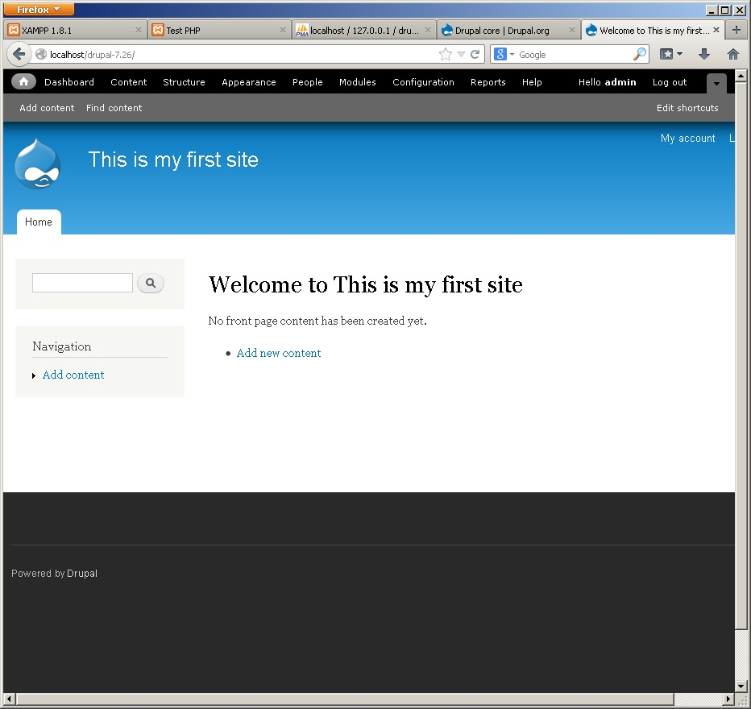
همانطور که در تصویر مشاهده می کنید، دروپال به طور پیش فرض، کاملا به زبان انگلیسی و چپ چین می باشد. زبان انگلیسی، زبان built-in (درون ساخت) دروپال است. یعنی رشته های انگلیسی داخل کدهای دروپال اصطلاحا hard-code شده اند. و لذا برای این که دروپال انگلیسی باشد، نیاز به هیچ کار خاصی و ماژول خاصی نیست. به همین خاطر از کلمه ی build-in استفاده می کنیم.
بسیاری از کاربران دروپال، با همین محیط انگلیسی راحت هستند (کسانی که مخاطبین شان دارای زبان مادری انگلیسی هستند مانند انگلیسی ها و آمریکایی ها).
اما برای این که دروپال چند زبانگی را پشتیبانی کند، باید ماژول های مربوطه را فعال نمود.
دروپال برای چند زبانه بودن، دارای سیستم پیچیده و پیشرفته ای است.
- ترجمه ی رشته های داخلی (built-in interface)
- ترجمه ی رشته های داینامیک (text groups و ...)
- ترجمه ی محتوا (content translation)
- راست چین شدن ظاهر سایت (theme system)
- و ...
من در این مقاله به تمامی موارد نمی پردازم، زیرا ما فعلا قصد نداریم سایت را واقعا چند زبانه کنیم. ما فقط می خواهیم سایت را فارسی کنیم یعنی تک زبانه. (البته نمی توان زبان درون ساخته ی انگلیسی را حذف کرد)
در این مقاله فقط به ترجمه ی رشته های داخلی و راست چین شدن ظاهر سایت می پردازیم که برای ساخت یک سایت کاملا فارسی با استفاده از دروپال لازم است.
راست چین شدن محیط سایت، در لایه ی theme انجام می گیرد. هسته ی دروپال و تمامی theme ها و ماژول های داخل پکیج استاندارد Drupal، به طور کامل با حالت راست چین سازگار هستند. لذا فعلا ما نیازی نداریم کار خاصی در این خصوص انجام دهیم، اما اگر بخواهیم از یک theme یا module دیگر استفاده کنیم، ممکن است نیاز به کد نویسی css به وجود بیاید که در قسمت های بعدی دوره، در مورد این موارد هم خواهم نوشت.
اما برای ترجمه ی رشته های داخلی دروپال، باید ماژولی به نام locale ا فعال کنیم که این ماژول در پکیج استاندارد دروپال موجود است. برای فعال کردن این ماژول، از منوی سیاه رنگ بالای سایت روی Modules کلیک کنید تا صفحه ی مدیریت ماژول ها باز شود.
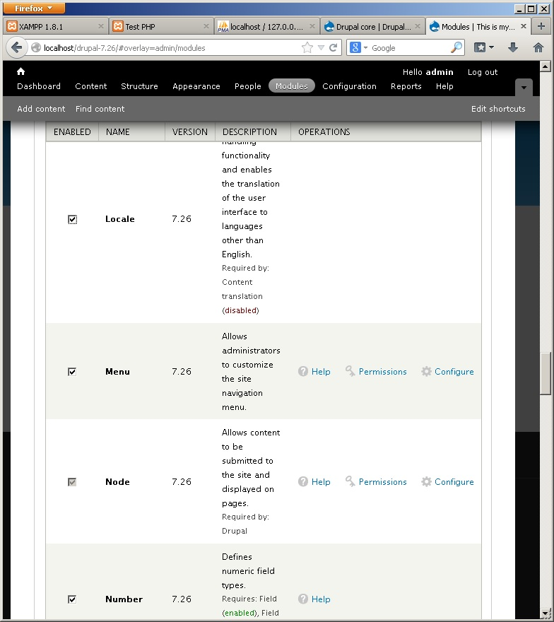
مانند تصویر فوق، ماژول Locale را پیدا کنید و آن را تیک بزنید و سپس از پایین صفحه، دکمه ی Save configuration را کلیک کنید تا ماژول فعال شود.
این ماژول پس از فعال شدن، قابلیت ترجمه ی رشته های داخلی دروپال را فراهم می کند و گزینه هایی به تنظیمات دروپال اضافه می کند.
اکنون برای مشاهده ی تنظیمات ماژول، از منوی سیاه رنگ بالای سایت (که به آن تولبار یا منوی مدیریتی هم گفته می شود) بر روی Configuration کلیک کنید. (برای مشاهده ی تصویر در سایت اصلی، روی آن کلیک کنید)
{kind=link}
همانطور که در تصویر مشاهده می کنید، در پایین سمت چپ صفحه ی تنظیمات، یک لینک به نام Languages وجود دارد. روی آن کلیک کنید تا به صفحه ی مدیریت زبان ها وارد شوید.
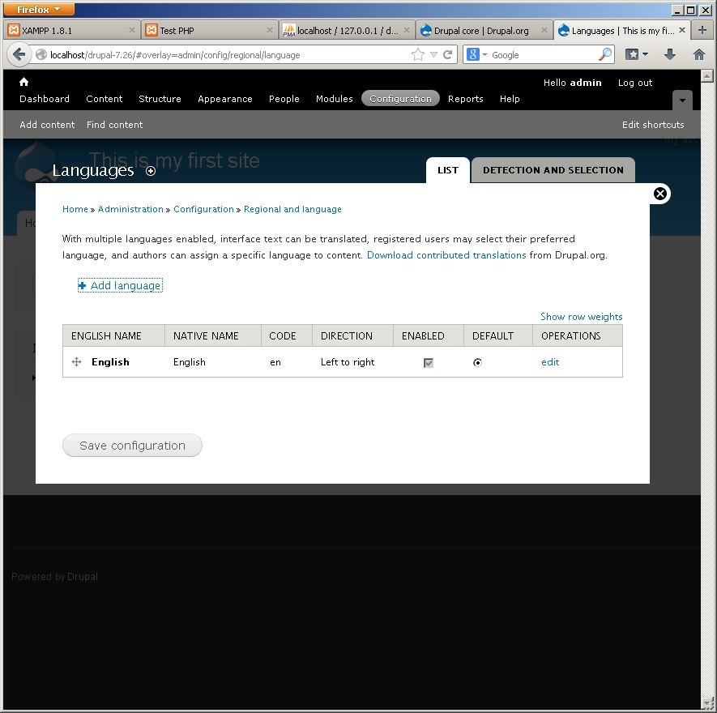
در صفحه ی مدیریت زبان ها، می توانید زبان های نصب شده را مشاهده و ویرایش یا حذف کنید؛ می توانید زبان پیش فرض سایت را انتخاب کنید و همچنین بسیاری از تنظیمات دیگر در این صفحه قابل انجام است.
برای افزودن زبان فارسی، همانطور که در تصویر مشخص است، بر روی دکمه ی Add language کلیک کنید:
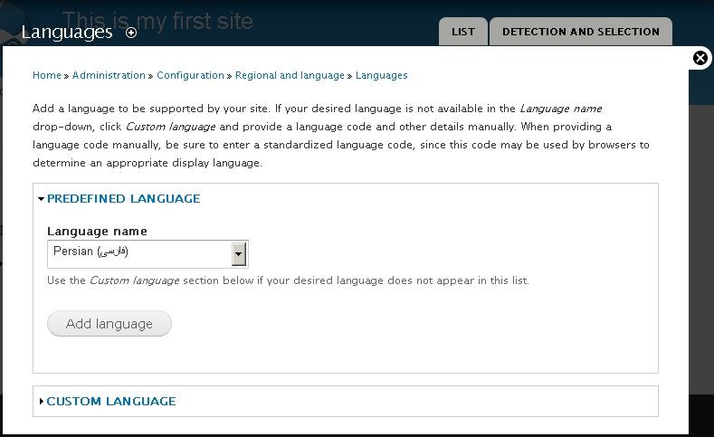
در تصویر فوق، صفحه ی افزودن زبان جدید را مشاهده می کنید. همانطور که می بینید، دروپال همه ی زبان های سر تا سر دنیا را پشتیبانی می کند. و همچنین می توان زبان های جدیدی که قبلا وجود نداشته را هم تعریف کرد! (Custom language)
برای افزودن زبان فارسی، از درون لیست دراپ دان Language Name زبان فارسی را انتخاب کنید (مطابق تصویر بالا) و دکمه ی Add language را کلیک کنید. هنگامی که زبان اضافه شد، دوباره به صفحه ی مدیریت زبان ها هدایت می شوید.
اکنون باید زبان فارسی را به عنوان زبان پیش فرض دروپال انتخاب کنیم. برای این منظور، در صفحه ی مدیریت زبان ها، در سطری که زبان فارسی قرار گرفته، زیر ستون DEFAULT دکمه ی گرد رادیویی را علامت بزنید و از پایین صفحه، دکمه ی Save configuration را کلیک کنید. مشابه شکل زیر:
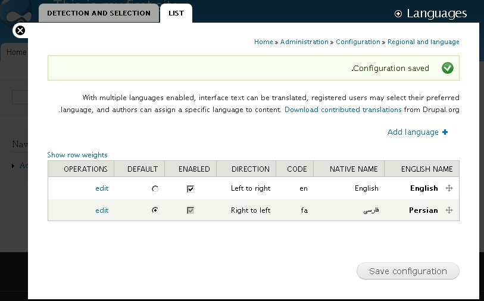
همانطور که در تصویر فوق مشاهده می کنید، زبان فارسی به عنوان زبان پیش فرض انتخاب شده است. اگر خوب دقت کنید مشاهده می کنید که محیط دروپال هم راست چین شده است. یعنی همه چیز به طور آینه ای در راستای افقی قرینه شده است.
اکنون قصد داریم یک کار مفید دیگر انجام دهیم.
محیط کاربری دروپال باید فارسی باشد، اما محیط مدیریتی دروپال بهتر است همان انگلیسی بماند. چون ما که قرار است مدیریت فنی سایت را به عهده داشته باشیم، با زبان انگلیسی راحت تر هستیم. عمده ی اصطلاحات دروپال، به زبان انگلیسی جا افتاده است. به این دلیل و به دلایل فراوان دیگر، خیلی خوب است که علاوه بر زبان فارسی، زبان انگلیسی را هم داشته باشیم.
به هزاران دلیل، شما ممکن است بخواهید گاهی اوقات سایت را به فارسی و راست چین ببینید و گاهی اوقات سایت را به انگلیسی و چپ چین همانطوری که اولش بوده ببینید.
از آن جایی که دروپال یک سیستم چند زبانه است، به طور کامل چنین چیزی را پشتیبانی می کند. فقط باید راهی داشته باشیم که مشخص کنیم در هر لحظه می خواهیم سایت را در چه زبانی مشاهده کنیم.
دروپال دارای سیستمی هست به نام Language detection که به کمک آن می تواند تصمیم بگیرد که سایت باید به چه زبانی نشان داده شود. در حقیقت انتخاب زبان بر عهده ی دروپال است.
مثلا ممکن است شما بخواهید سایت تان برای کاربران ایرانی، به زبان فارسی نشان داده شود و برای کاربران غیر ایرانی، به انگلیسی نشان داده شود یا هر چیز دیگری که مد نظرتان باشد.
برای تنظیم این موارد، در صفحه ی مدیریت زبان ها، از بالا بر روی تب Detection and selection (تشخیص و انتخاب) کلیک کنید.
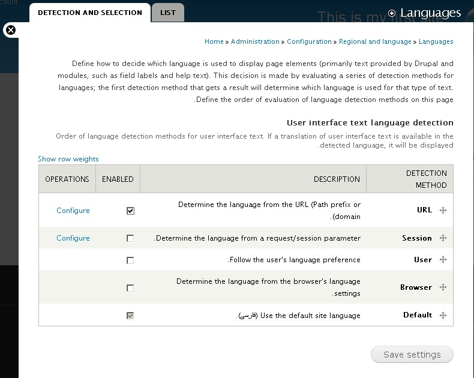
در این صفحه، مکانیزم تشخیص و انتخاب زبان را تنظیم می کنیم.
مکانیزم های تشخیص و انتخاب زبان
دروپال 7 برای تشخیص و انتخاب زبان، 5 مکانیزم مختلف را دارا می باشد:
- انتخاب زبان بر اساس آدرس URL: این خود به دو مدل تقسیم می شود:
- انتخاب بر اساس پیشوند مسیر. اگر در ابتدای مسیر URL ، پیشوند en را اضافه کنیم، سایت انگلیسی خواهد بود و اگر پیشوند fa را اضافه کنیم، سایت فارسی خواهد بود و به همین ترتیب... این حالت پیش فرض است.
- انتخاب بر اساس ساب دامین. در این حالت، باید وب سرور و dns تنظیم شده باشد. به این شکل که مثلا en.site.tld زبان انگلیسی است و fa.site.tld سایت در زبان فارسی است. این روش به دلیل این که نیاز به پیکربندی dns و وب سرور دارد، فعلا به آن نمی پردازیم و از روش Path prefix استفاده خواهبم کرد که حالت پیش فرض است
- انتخاب بر اساس جلسه (Session): دروپال، بر اساس پارامتر های موجود در session کاربر، تصمیم می گیرد که سایت را به چه زبانی نمایش دهد.
- انتخاب بر اساس تنظیمات حساب کاربری (User): کاربرانی که در سایت عضو باشند، می توانند در تنظیمات حساب کاربری شان، مشخص کنند که می خواهند سایت را به چه زبانی مشاهده کنند.
- انتخاب بر اساس تنظیمات مرورگر کاربر (Browser): مرورگری که کاربر از آن استفاده می کند، یک کد زبان را ارسال می کند و دروپال بر اساس آن تصمیم میگیرد که سایت را به چه زبانی نشان دهد. (مانند سایت هایی همچون گوگل که برای کاربران ایرانی به طور خودکار فارسی می شوند و برای کاربران فرانسوی، به زبان فرانسه نشان داده می شود و ...)
- زبان پیش فرض سایت. زبانی است که در صفحه ی مدیریت زبان ها، به عنوان پیش فرض انتخاب کردیم.
می توانید مکانیزم هایی که می خواهید را فعال کنید. توجه کنید که ممکن است هر یک از این مکانیزم ها، زبان مختلفی را تشخیص دهد. مثلا ممکن است کاربر سایت را با پیشوند مسیر fa (فارسی) باز کرده باشد، ولی در تنظیمات حساب کاربری اش، زبان فرانسه را انتخاب کرده باشد، و ضمنا مرورگر وی، کد زبان انگلیسی را ارسال کند.
این که در چنین حالتی، کدام زبان انتخاب شود، بستگی به ترتیب اولویت مکانیزم های تشخیص و انتخاب دارد. شما می توانید با استفاده از موس و dran'n'drop مکانیزم ها را بالا و پایین کنید و اولویت ها را جا به جا کنید.
معمولا برای اکثر کاربرد هایی که ما لازم داریم، گزینه ی اول (URL) کفایت می کند. لذا آن را فعال کنید و دکمه ی Save configuration را کلیک کنید.
اکنون صفحه ی اصلی سایت را باز کنید:
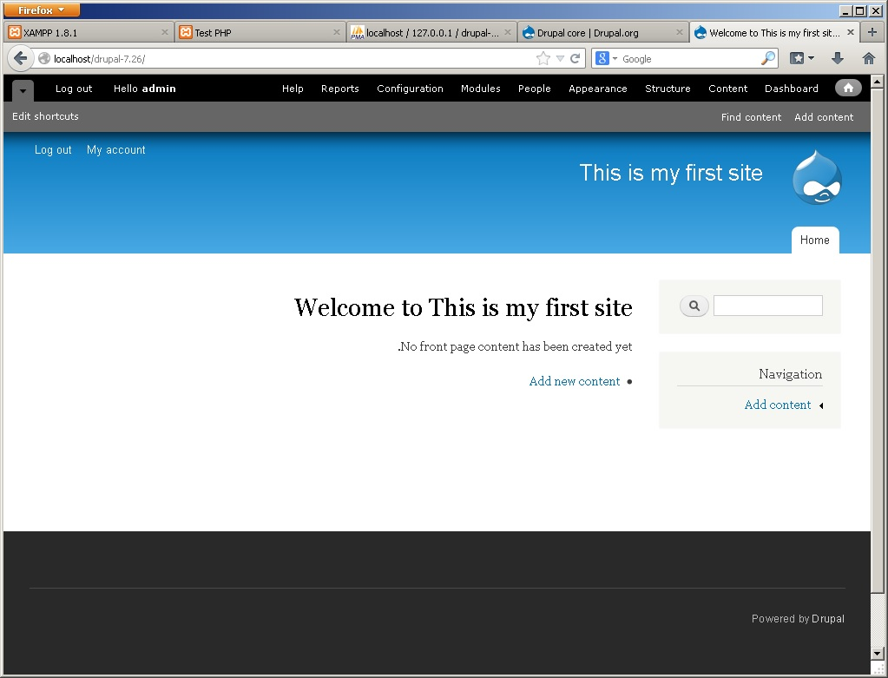
می بینید که بدون پیشوند مسیر، زبان پیش فرض سایت (فارسی) انتخاب شده است. (سایت راست چین است)
اکنون در سایت را با پیشوند en باز کنید مطابق تصویر زیر:
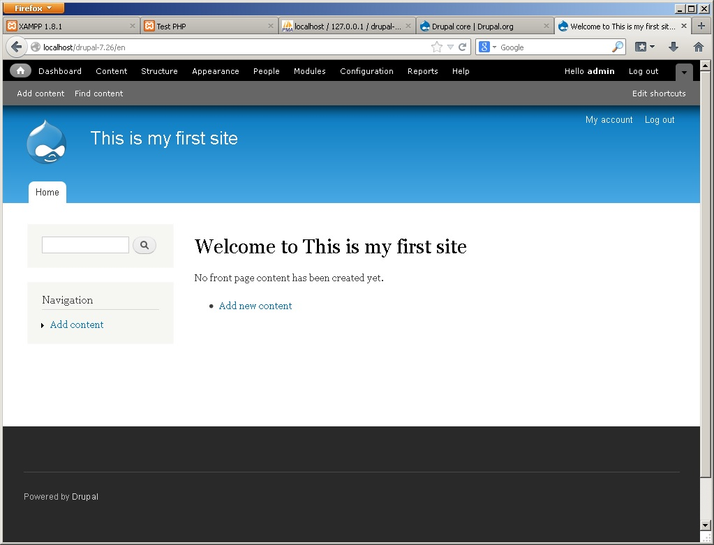
مشاهده می کنید که سایت با پشوند en به زبان انگلیسی (چپ چین) باز شد.
هم اکنون سایت را با پیشوند fa باز کنید.
مشاهده می کنید که با پیشوند fa نیز سایت به زبان فارسی باز شد.
در این جا یک نکته وجود دارد:
از آن جایی که سایت ما چند زبانه نیست و در حقیقت ما فقط می خواهیم سایت مان فارسی باشد، لذا نیازی به پیشوند fa نداریم.
آن چه که ما نیاز داریم و بهترین حالت است، این است که سایت بدون پیشوند مسیر، فارسی باشد و با پیشوند en انگلیسی باشد. (پیشوند en را فقط برای مواقع خاص که می خواهیم سایت انگلیسی باشد استفاده میکنیم. و در حالت های عادی که سایت فارسی است، اصلا نیازی به پیشوند نخواهیم داشت.)
در دروپال، زبانی که به عنوان زبان پیش فرض سایت انتخاب شده باشد، می تواند فاقد پیشوند مسیر باشد. برای این که پیشوند مسیر را برای زبان فارسی حذف کنیم، مجددا به صفحه ی مدیریت زبان ها بروید:
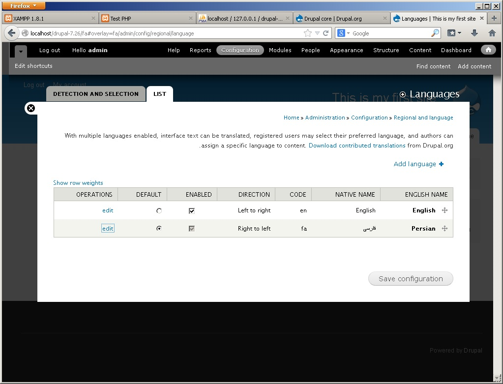
مطابق تصویر فوق، در سطری که زبان فارسی وجود دارد، روی لینک edit کلیک کنید تا وارد تنظیمات زبان فارسی شوید.
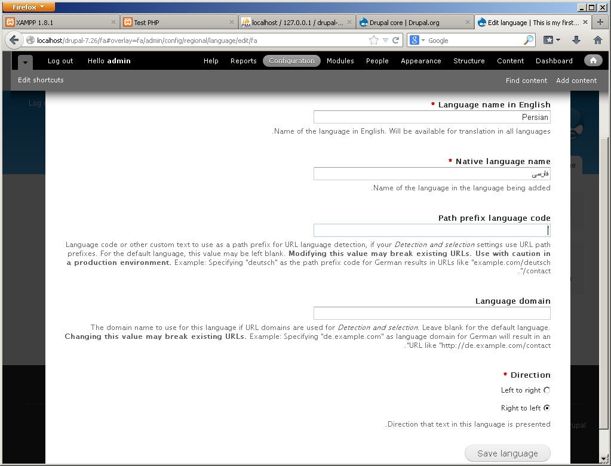
در این صفحه، تنظیمات متعددی وجود دارد، اما ما فقط می خواهیم که پیشوند مسیر را حذف کنیم. برای این منظور، در قسمت Path prefix language code عبارت fa را پاک کنید و دکمه ی Save language را کلیک کنید.
در این لحظه، با خطای 404 Page not found روبرو می شوید که کاملا طبیعی است:
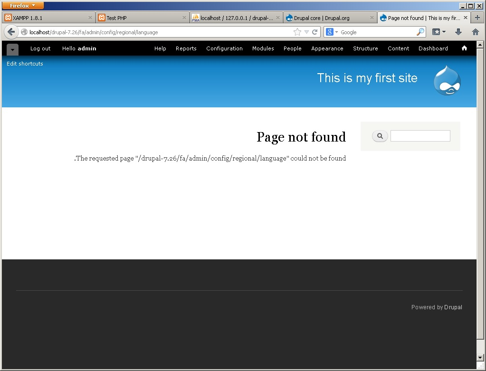
دلیل بروز این خطا، این است که پیشوند fa غیر فعال شده و سایت دیگر پیشوند مسیر fa را نمی شناسد. به همین خاطر، آدرس fa/admin/config/regional/language در سیستم شناخته شده نیست و خطای 404 را مشاهده خواهید کرد.
اکنون اگر از داخل URL صفحه، fa را حذف کنید و مسیر admin/config/regional/language را باز کنید می بینید که صفحه ی مدیریت زبان ها به صورت راست چین باز می شود و اگر مسیر en/admin/config/regional/language را باز کنید، صفحه ی مدیریت زبان ها در حالت چپ چین باز می شود.
اکنون افزودن زبان فارسی و پیکربندی آن به اتمام رسید. مرحله ی بعدی وارد کردن فایل ترجمه است. لطفا با من همراه باشید.
ترجمه ی واسط کاربری دروپال
مرحله ی بعدی برای فارسی سازی دروپال این است که رشته های دروپال را ترجمه کنیم. برای این منظور باید فایل ترجمه را در سایت import کنیم. روش آن را در ادامه توضیح می دهم.
از منوی بالای سایت، روی Configuration کلیک کنید.
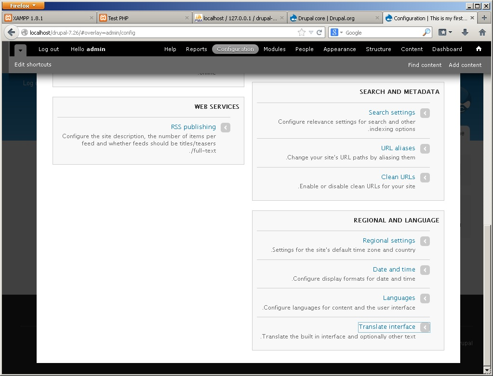
در قسمت Regional and language روی Translate interface کلیک کنید تا وارد محیط واسط ترجمه شوید.
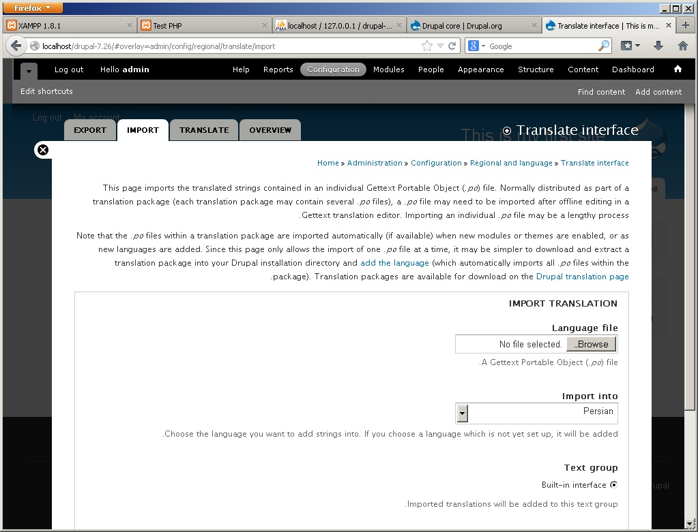
اینجا یکی از مهم ترین بخش های دروپال است.
واسط ترحمه Translate interface محلی است که در آن می توانید کلیه ی رشته های واسط درون ساخت دروپال (built-in interface) را مشاهده، ویرایش و ترجمه کنید. و همچنین می توانید فایل ترجمه را در این قسمت وارد (import) کنید و یا از سایت استخراج (export) کنید.
اکنون ما می خواهیم فایل ترجمه را وارد کنیم. برای همین روی تب import کلیک کنید تا صفحه مطابق شکل بالا باشد.
تیم ترجمه ی دروپال فارسی
اجازه دهید در اینجا فرصت را غنیمت شمرده و دوباره کمی راجع به تیم ترجمه ی دروپال فارسی صحبت کنیم.
دروپال، یک پروژه ی متن باز است و سایت رسمی آن drupal.org است. انجمن دروپال (Drupal comunity) یک ویژگی مثبت و ارزشمند دارد و آن هم انسجام و یکپارچگی و اتحاد آن می باشد.
کلیه ی فعالیت های رسمی پروژه ی دروپال، در سایت drupal.org و ساب دامین های آن انجام می گیرد. کلیه ی مسایل دروپال، از جمله هسته ی دروپال، ماژول ها، پوسته ها، توزیع های دروپال، تالار گفتمان، issue queue و سیستم مدیریت پروژه، تیم ترجمه، ریپوزیتوری ها، مستندات documentation دروپال و ماژول ها و پوسته ها و ...، همه و همه داخل سایت واحد drupal.org هستند.
این یک ویژگی بسیار عالی است که شما می دانید برای هر کاری در مورد دروپال، باید وارد همین سایت drupal.org شوید.
با این حال، افراد و گروه های متعددی وجود دارند که سایت ها و انجمن های جداگانه در مورد دروپال ایجاد کرده اند. وبلاگ نویس های بسیاری هستند که به زبان های مختلف از جمله فارسی در مورد دروپال مطلب می نویسند و افراد و تیم ها و شرکت های فراوانی در همه جا و از جمله ایران، هستند که خدمات مرتبط با دروپال را ارایه می دهند و موجب پیشرفت این پروژه شده اند.
با این حال، مرجع رسمی دروپال، همیشه همان سایت drupal.org است. و این مسئله در قیاس با پروژه های مشابه، یک نقطه ی قوّت برای دروپال به حساب می آید.
مرکز ترجمه دروپال (Drupal translations) در آدرس زیر واقع است:
https://localize.drupal.org/
در آدرس فوق، می توانید ترجمه های دروپال و کلیه ی ماژول های آن را به تمامی زبان های زنده ی دنیا مشاهده کنید. هر زبانی برای خودش یک صفحه ی اختصاصی و یک تیم هم دارد.
صفحه ی تیم ترجمه ی فارسی دروپال، این است:
https://localize.drupal.org/translate/languages/fa
که تصویر آن را در زیر مشاهده می کنید:
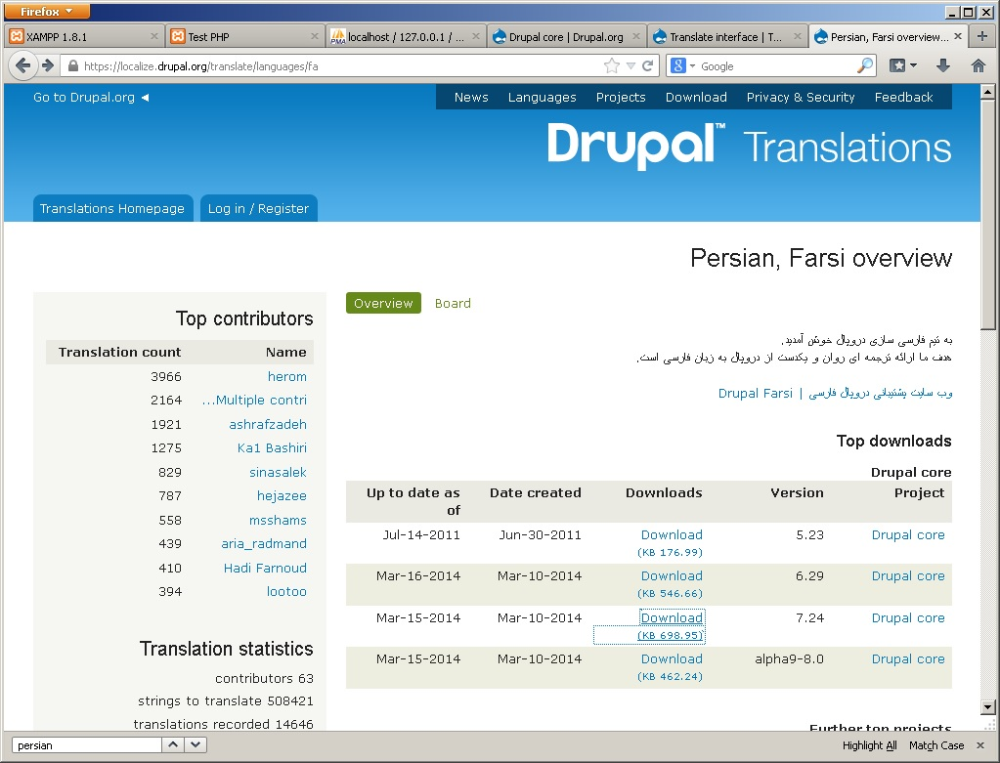
این صفحه ی خانگی تیم ترجمه ی فارسی است و شما هم می توانید در آن عضو شوید و در ترجمه ی دروپال سهیم باشید.
اکنون اجازه دهید کمی راجع به ساختار این صفحه شرح دهم. زیرا بعدا با آن زیاد کار خواهید داشت.
بالای صفحه دو تا تب وجود دارد: Overviews و Board . که البته اگر عضو تیم ترجمه باشید، تب های بیشتری را هم برای ترجمه ی رشته ها و شرکت در فعالیت در انجمن و ... مشاهده می کنید.
در تب Board، بورد و تخته اعلانات تیم وجود دارد و مشابه یک تالار گفتمان ساده می باشد و محل بحث و تبادل نظر اعضای انجمن است.
در تب Overview ابتدا لیست مهم ترین فایل ها را برای دانلود مشاهده می کنید که همانطور که در تصویر فوق مشهود است، می توانید فایل ترجمه ی Drupal core را دانلود کنید. دقت کنید که فایل ترجمه ی آخرین نسخه را دانلود نمایید.
در نوار سمت چپ، نام افرادی که بیشترین مشارکت را در ترجمه ی دروپال داشته اند را مشاهده می کنید و زیر آن، آمار تعداد رشته های ترجمه شده و تعداد رشته های منتظر تایید و تعداد کل افراد کمک کننده و ... را مشاهده می کنید. و قدری پایین تر، لیست اعضای عضو تیم مدیریت تیم ترجمه را مشاهده میکنید که وظیفه ی نظارت و تایید رشته ها و ترجمه ها را بر عهده دارند.
اکنون فایل ترجمه ی دروپال را دانلود کنید. فایل های ترجمه دارای فرمت استاندارد Gettext می باشند و با پسوند po وجود دارند.
در صورتی که تمایل داشته باشید که یک فایل po را باز کنید و درون آن را مشاهده کنید، می توانید از نرم افزار PoEdit استفاده کنید. با استفاده ار این نرم افزار، می توانید رشته ها و ترجمه های موجود در فایل po را مشاهده و ویرایش کنید.
اکنون باید فایل po را در دروپال وارد کنیم.
وارد کردن فایل po در واسط ترجمه
مجددا به دروپال باز می گردیم. در تب import از واسط ترجمه، در قسمت Language file، دکمه ی Browse را کلیک کنید و فایل po که دانلود کردید را انتخاب کنید.
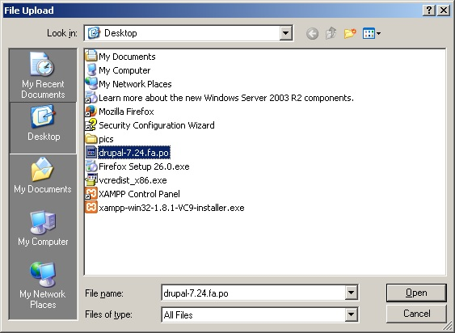
در قسمت Import to مشخص می کنید که این فایل ترجمه برای چه زبانی است که باید Persian انتخاب شده باشد.
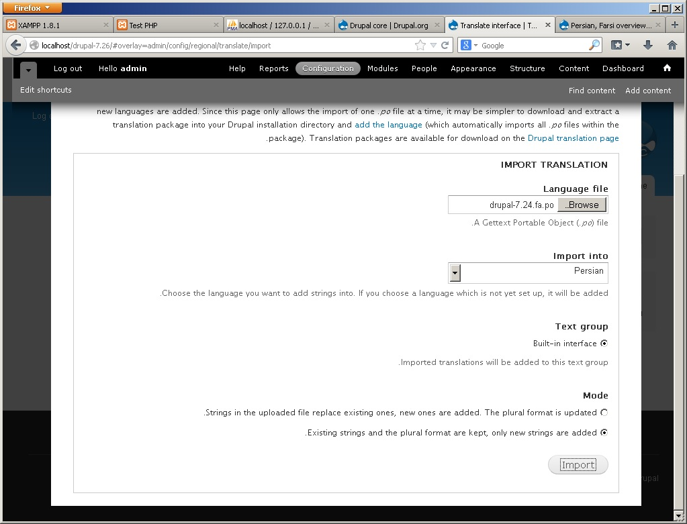
باقی موارد را مانند تصویر فوق به حالتی که هستند رها کنید و دکمه ی Import را کلیک کنید.
در این مرحله، فایل po در سایت آپلود می شود و دروپال شروع به پردازش آن و وارد کردن رشته ها به دیتابیس می کند. این کار ممکن است چند دقیقه هم طول بکشد. اگر دروپال روی یک کامپیوتر با پردازنده ی سریع در حال اجرا باشد، کار سریع تر انجام خواهد شد.
اگر در حین انجام کار، با خطای max execution time exceeded مواجه شدید، باید فایل php.ini در xampp را ویرایش کنید و گزینه ی max_execution_time را بر روی مقدار بزرگتری (مثلا 600) تنظیم کنید و سرور apache را restart کنید و مجددا اقدام به وارد کردن ترجمه ها نمایید.
پس از این که ترجمه ها وارد شد، سایت را به طور کامل به فارسی مشاهده خواهید کرد مانند تصویر زیر:
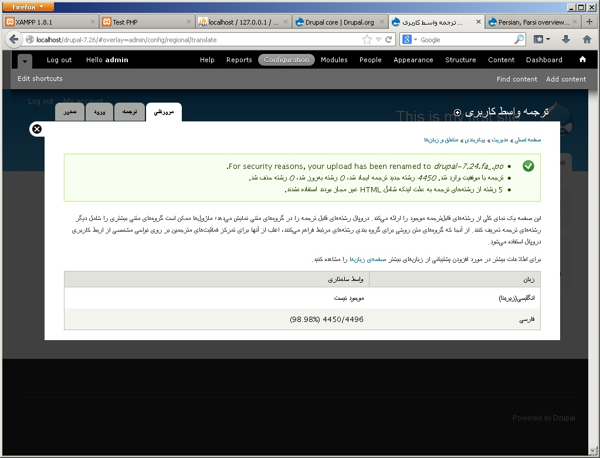
با توجه به این که واسط ترجمه در درون یک دیالوگ ajax لود شده، هنوز منوی بالای سایت را به انگلیسی مشاهده می کنید. اکنون صفحه را refresh کنید و یا وارد صفحه ی اصلی سایت شوید تا سایت را به طور کامل فارسی ببینید.
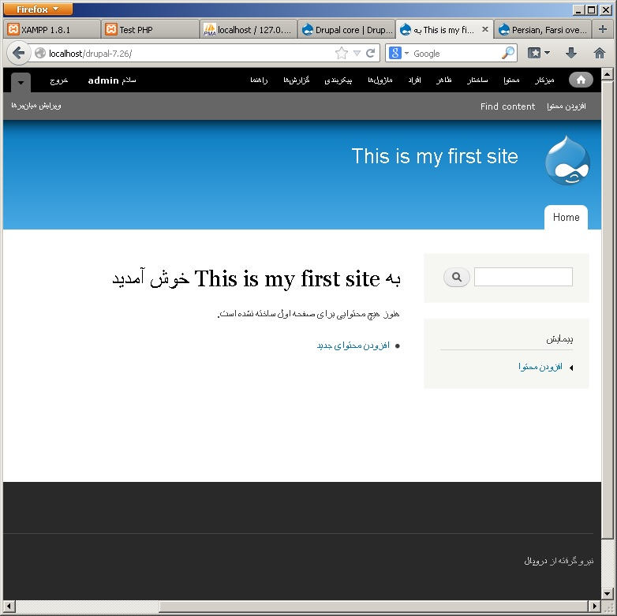
ممکن است مشاهده کنید که بعضی قسمت های سایت هنوز انگلیسی است. دلیل این موضوع این است که احتمالا فایل ترجمه به درستی وارد نشده است و یا به احتمال خیلی بیشتر، ممکن است که آن رشته هنوز توسط تیم ترجمه، ترجمه نشده باشد. می توانید با عضویت در تیم ترجمه، به فارسی سازی دروپال کمک کنید.
همچنین برای این که فقط یک قسمت از سایت تان را ترجمه کنید و یا اگر از برخی ترجمه ها راضی نیستید و می خواهید ترجمه ها را برای سایت خودتان سفارشی سازی کنید، باید در همان واسط ترجمه، وارد تب Translate شوید و رشته ی مورد نظرتان را جستجو کرده و آن را ویرایش کنید.
همچنین ممکن است که احساس کنید که فونت سایت زیاد جالب نیست. این موضوع به theme سایت برمی گردد. برای زیبا تر شدن فونت های سایت برای زبان فارسی، بهتر است که فونت tahoma را برای سایت انتخاب کنید که این کار در داخل theme سایت انجام خواهد شد و روش انجام آن خارج از حیطه ی این مقاله است. بعدا روش آن را شرح خواهم داد.
از این که تا پایان مقاله را مطالعه کردید، از شما متشکرم. امیدوارم که از این آموزش استفاده کرده باشید.
لطفا نظرات تان را در زیر همین مطلب برای من ارسال کنید.
در قسمت بعدی، راجع به ویژگی های دروپال، این سیستم قدرتمند و بی نظیر، بیشتر خواهم نوشت و شما را با برخی از ویژگی های اصلی آن آشنا خواهم کرد.
با آرزوی موفقیت.